PostgreSQL – Průvodce a tipy
Přehled základních pojmů, instalace, příkazů a doporučení pro práci s PostgreSQL.

Co je PostgreSQL?
- Objektově-relační databázový systém s otevřeným zdrojovým kódem.
- Jeden z nejrobustnějších SQL systémů dostupných zdarma.
- Podporuje procedurální jazyky:
PL/pgSQL,PL/Python,PL/Perl,PL/Javaa další.
Note
PL znamená „Procedural Language" – umožňuje psaní funkcí a procedur přímo v databázi.
Uživatelské rozhraní
Doporučený klient je pgAdmin 4 – instaluje se jako součást PostgreSQL:
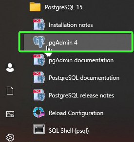
Instalace PostgreSQL
Kompletní průvodce instalací krok za krokem
1. Výběr verze a stažení
Stáhni instalátor z enterprisedb.com/downloads/postgres-postgresql-downloads:
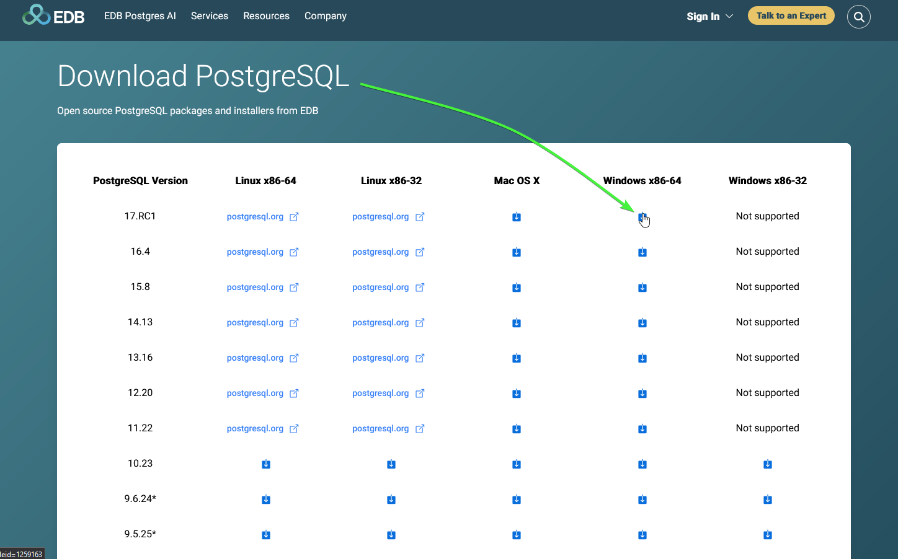
2. Spuštění instalace
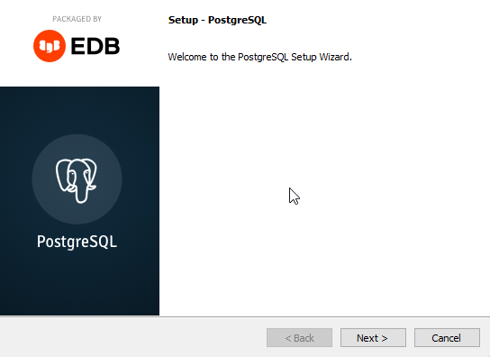
3. Výběr složky instalace (doporučeno ponechat výchozí):
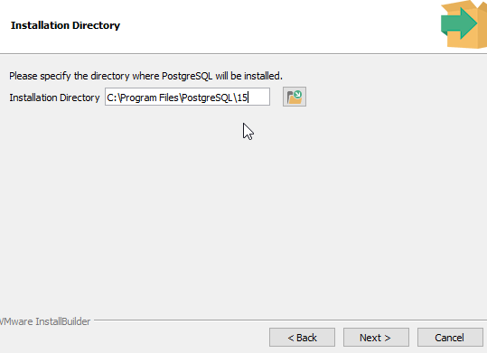
4. Výběr komponent
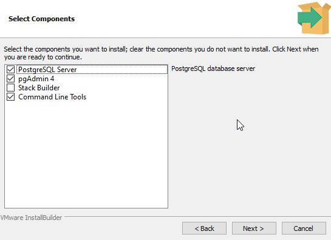
Note
Doporučeno nainstalovat pgAdmin 4 (grafické rozhraní) a Command Line Tools.
5. Složka pro data (doporučeno ponechat výchozí):
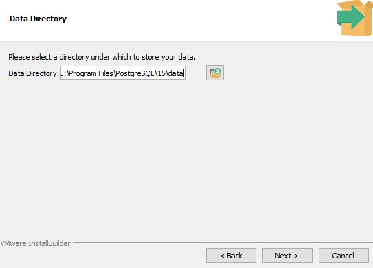
6. Nastavení hesla:
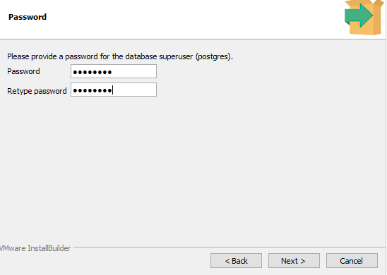
7. Port serveru (výchozí: 5432):
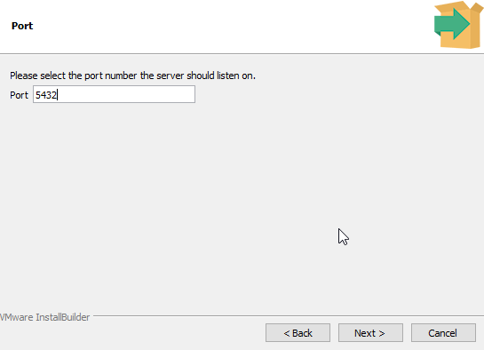
8. Geografická lokace:
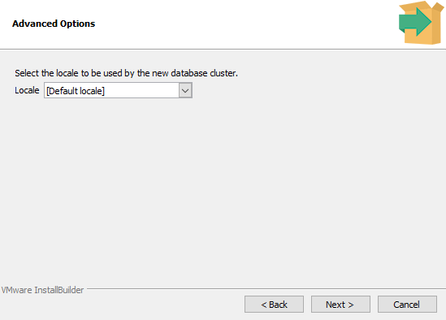
9. Kontrola a dokončení:
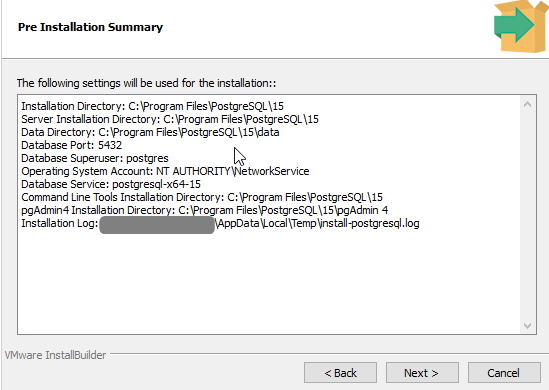
Připojení z příkazového řádku
Test naslouchání a ověření připojení
Otevři konzoli PostgreSQL:
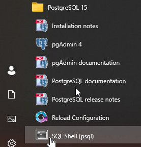
P�ipojení k serveru:
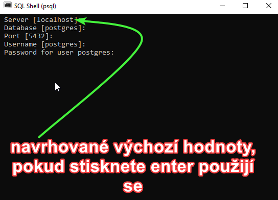
Výsledek:
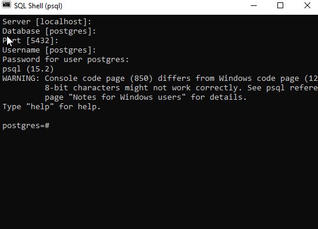
Ověření verze:
SELECT version();
Warning
Pokud konzole nezobrazuje anglický text, uprav:
C:\Program Files\PostgreSQL\16\data\postgresql.conf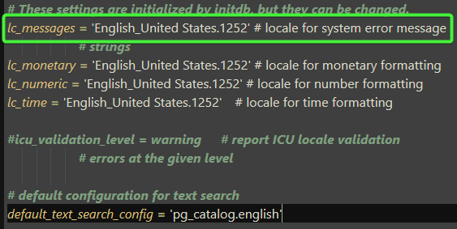
Systémové proměnné prostředí
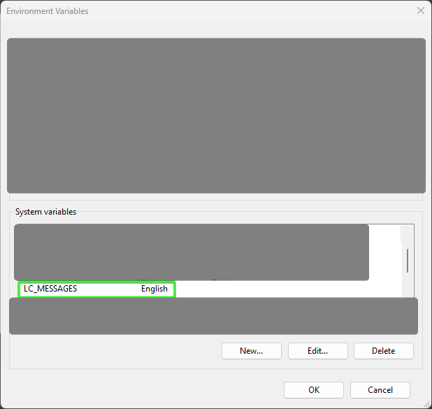
Poté restartuj konzoli.